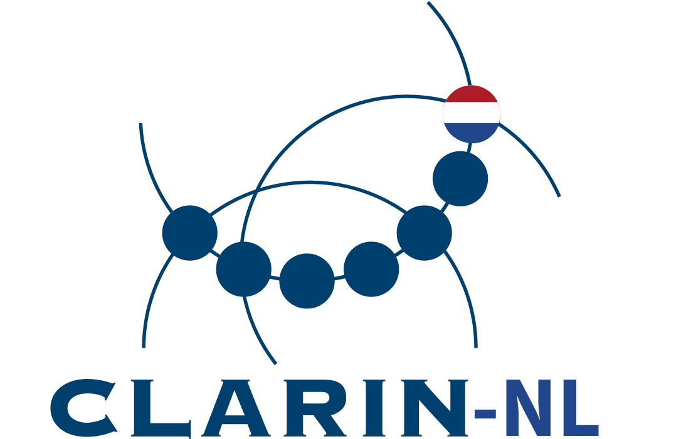
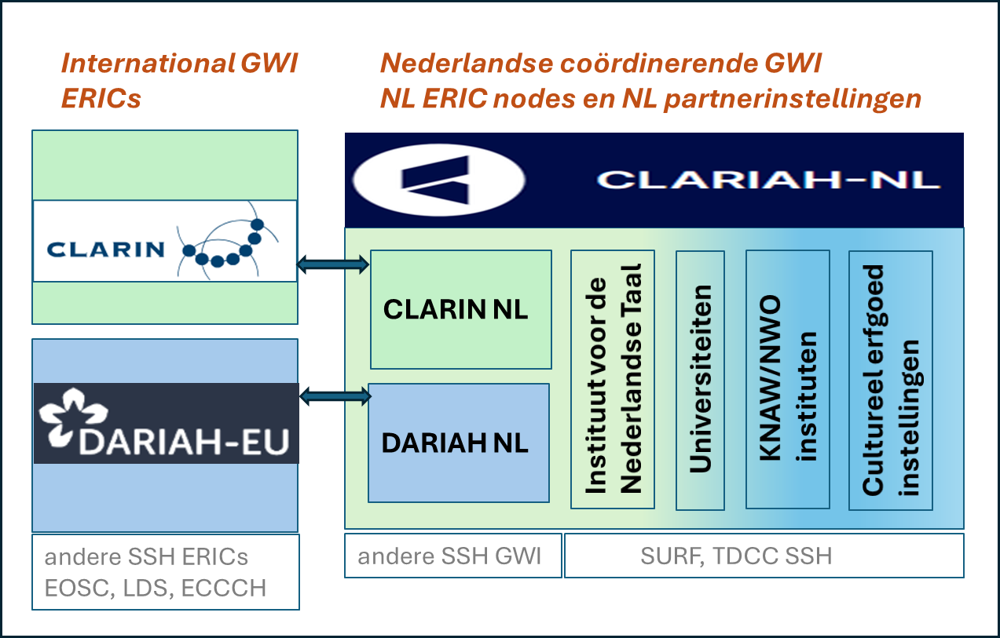

CLARIN-NL is the Dutch national node of CLARIN-ERIC, the European research infrastructure for language as social and cultural data.
CLARIN stands for Common Language Resources and Technology Infrastructure and ERIC stands for European Research Infrastructure Consortium (an international legal entity established by the European Commission in 2009).
The CLARIN infrastructure provides easy and sustainable access to a broad range of language data and tools to support research in the humanities and social sciences, and beyond. It is a distributed infrastructure. The majority of its operations, services and centres is provided and funded by CLARIN ERIC members, as well as observers. Members and observers can be countries or intergovernmental organisations.
The Netherlands joined CLARIN-ERIC right from the start in 2012 and has played a key role in the infrastructure ever since.
Within the Netherlands, CLARIN-NL and DARIAH-NL (the Dutch counterpart of DARIAH-ERIC, the Digital Research Infrastructure for the Arts and Humanities) have joined forces in CLARIAH-NL, the Common Lab Research Infrastructure for the Arts and Humanities. The image below illustrates the current research infrastructure landscape in the Netherlands.

Contact: clarin-nl@ivdnt.org